王国保卫战5 进程重设计 · 设计文档
| 项目 | 内容 |
|---|---|
| 游戏名称 | Kingdom Rush 5: Alliance（王国保卫战5：联盟） |
| 游戏类型 | 塔防 |
| 发售日期 | 2024 年 7 月 15 日 |
| 开发商 | Ironhide Game Studio |
《王国保卫战5》是一款经典塔防游戏。玩家在道路沿线的指定位置放置防御塔，消灭按预定间隔出现的一波波敌人。目标是在敌人到达道路终点（核心）之前击败所有敌人。所有波次结束后，如果到达核心的敌人少于一定数量，玩家获胜。
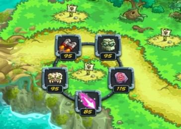
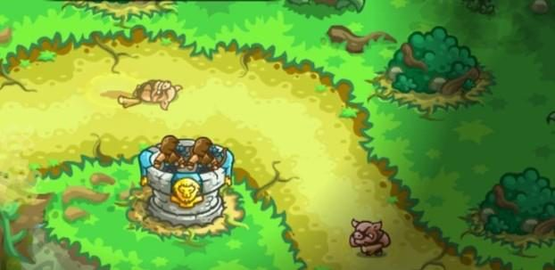
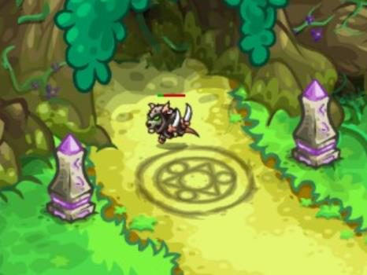
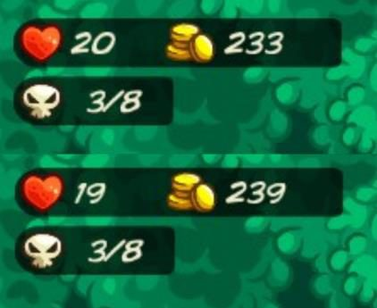
通关后，根据核心的剩余生命值为玩家评分。
《王国保卫战5》中有在道路上与敌人交战的单位，它们由防御塔或技能生成。
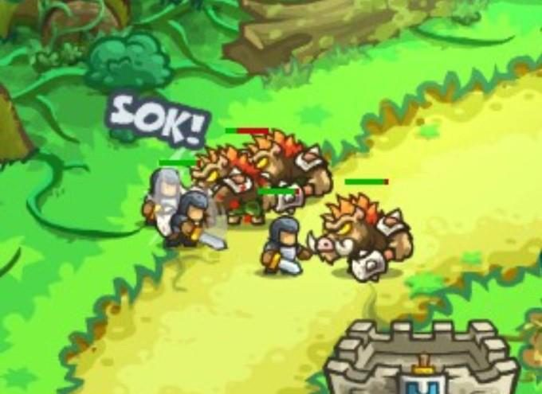
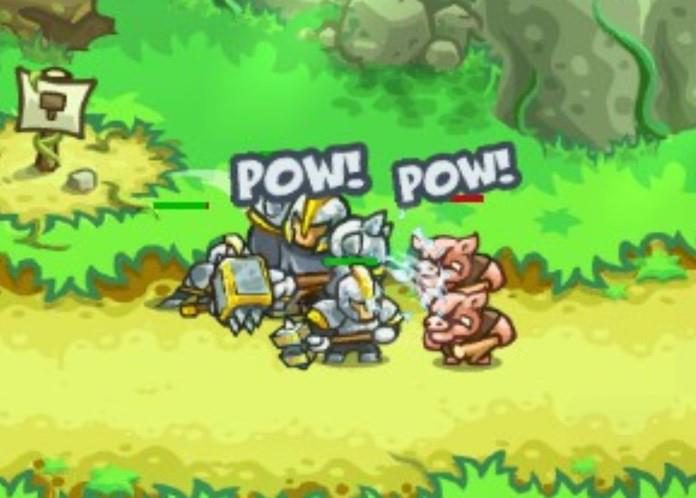
英雄是独特的、可操控的单位，战斗能力更强。
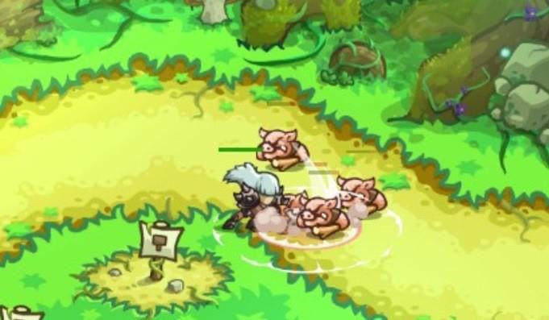
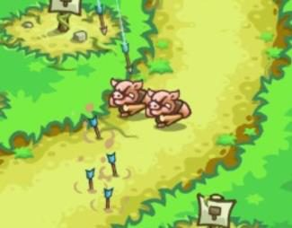
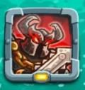
随着关卡推进，会解锁新的防御塔和英雄。英雄通过击败敌人获得经验，当前等级的经验满后升级，变得更强。英雄最高可升到 10 级。
在英雄界面中，玩家选择英雄头像即可查看该英雄的详细信息。
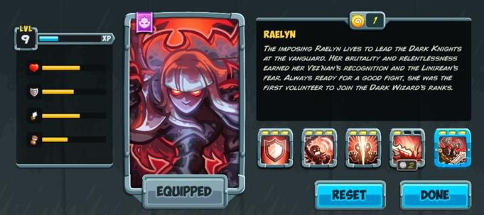
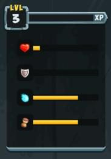
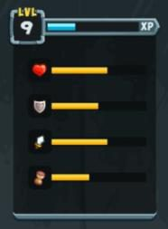
英雄升级时获得技能点，可用于升级技能。技能升级可以撤回，玩家可以重置并重新分配技能点。
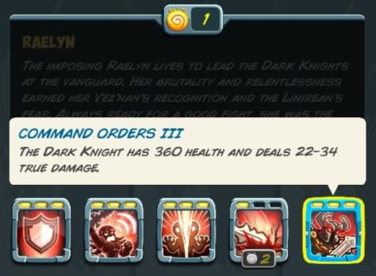
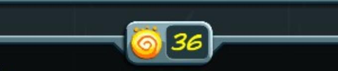
玩家可以在主菜单中选择主线关卡，并进入英雄、防御塔和升级的信息界面。通关一个关卡后解锁下一个关卡。
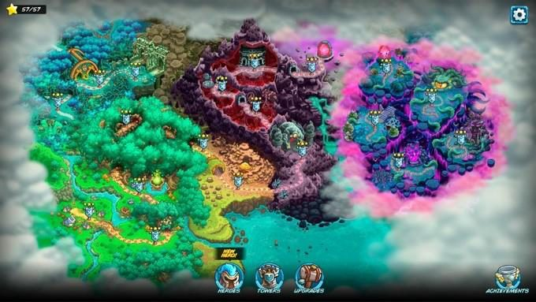
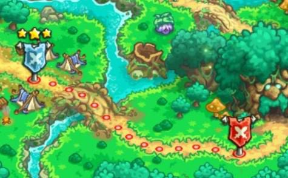
英雄界面中有 2 个英雄装备栏，装备的英雄会在战斗中出场。
更换出战英雄时，玩家点击想要的英雄头像，按下装备按钮，再选择要替换的栏位。
防御塔界面中有防御塔装备栏，装备的防御塔会在战斗中使用（最多 5 座）。
更换防御塔的流程与英雄相同。
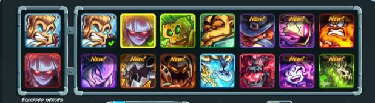
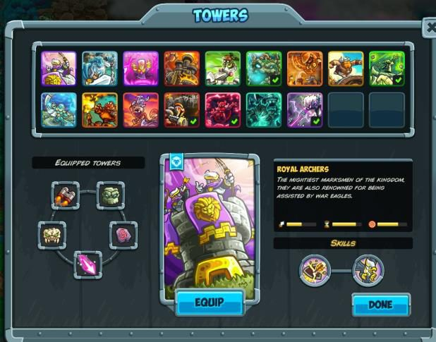
在关卡开始或结束时，游戏以漫画形式讲述故事。
主线剧情：《王国保卫战：复仇》之后，Linirea 落入 Vez’nan 的统治，南方森林中的叛乱正在酝酿。王国面临来自异次元生物「军阀（Warlords）」的威胁。为对抗这一威胁，Vez’nan 的黑暗军队与 Linirea 的叛军结成了不稳固的联盟。Linirea 的英雄们，包括精灵、兽人和黑暗骑士，联合起来保卫他们的世界。
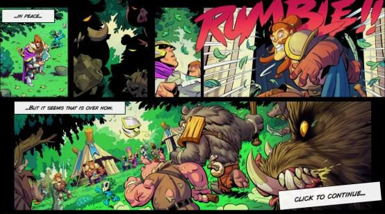
每个英雄都会有对应的专属支线关卡，满足不同类型的玩家画像：
| 「指挥官」 | 「英雄」 |
|---|---|
| 喜欢策略规划和精确执行。 | 对角色升级和成长感兴趣。 |
| 《王国保卫战》及同类策略游戏的典型玩家。 | 重视角色故事和背景设定。 |
| 反馈中经常提到需要更多关卡来提升体验深度。 | 策略能力可能有限。 |
目标：
打开角色界面即可进入支线关卡。
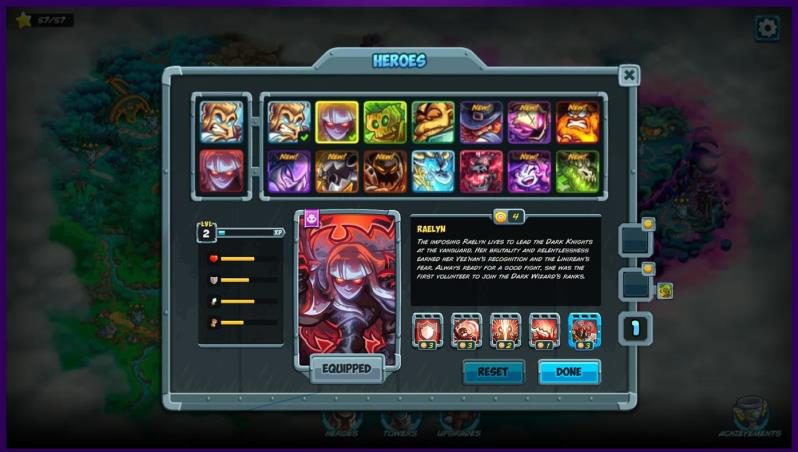
每个角色有 1–3 个支线关卡，显示在界面侧边。
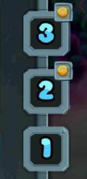
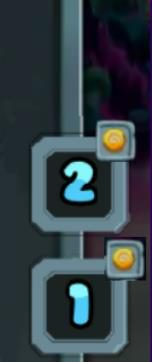
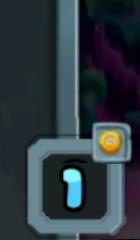
如果关卡奖励技能点，关卡图标右上角会显示技能点图标。如果两个英雄共享一个支线关卡，关卡图标上会显示另一位英雄的头像。
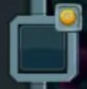
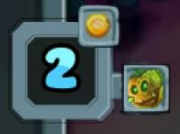
玩家点击支线关卡后，会进入该支线关卡的基本信息界面。
已解锁和未解锁的关卡以不同形式显示。
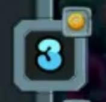
鼠标悬停在关卡上时，会显示解锁条件。
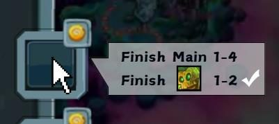
通关主线第 2 关后，主菜单中的英雄图标会高亮，提示玩家打开角色界面。
游戏会告知玩家可以解锁 Vesper（第一个解锁的英雄）的第一个支线关卡，并强制玩家打开这个关卡的信息界面。之后玩家可以自由操作。
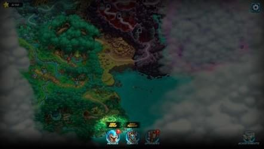
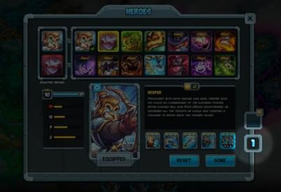
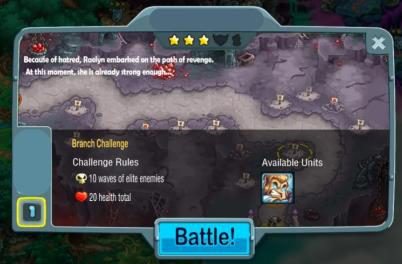
每个支线关卡都有一个教学主题，详见附件 Excel《Branch Levels》的 Sheet 2「Level Content」（附录表 2）。下面以 Raelyn 的第一个支线关卡为例，说明支线关卡的设计和玩法。
选择支线关卡后，玩家进入信息界面，界面中显示故事梗概和教学主题。
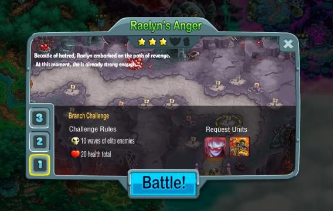
点击「Battle!」按钮进入英雄装备检查界面（注意这与主线关卡不同，主线关卡会直接进入游戏）。点击「Next」箭头按钮进入防御塔装备界面。
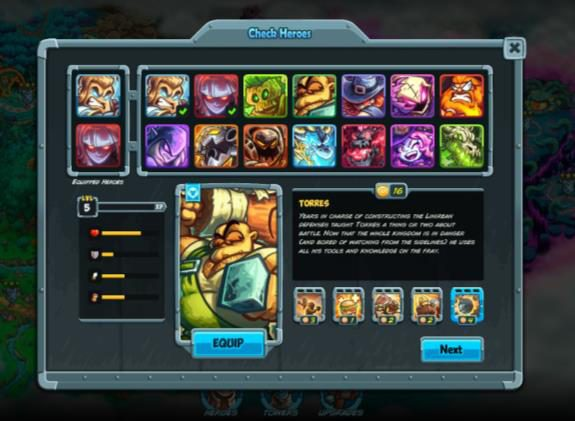
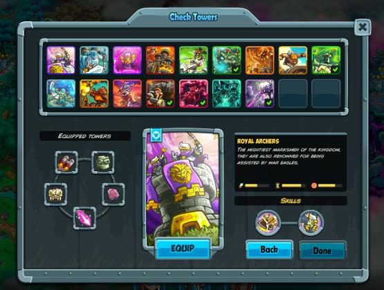
每个支线关卡都有特定的装备要求，要求玩家携带某些英雄或防御塔。如果玩家的装备不满足关卡要求，所需的英雄或防御塔会自动装备到玩家的第一个装备栏。玩家可以自由更换装备，但只有装备满足支线关卡要求时才能开始战斗。装备满足要求时，「Battle!」按钮会亮起，玩家才可以点击。
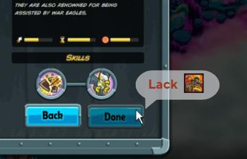
如果支线关卡的故事需要铺垫剧情或塑造角色，关卡开始时会播放一段漫画。
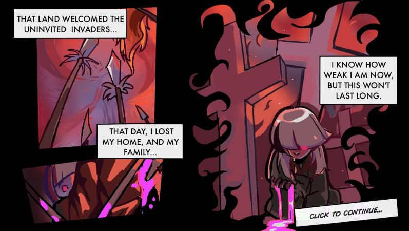
在支线关卡中，场上可能已经建好了一些防御塔，关卡中不能出售。
Raelyn 第一个支线关卡的初始防御塔配置为：1 座弓箭塔（锁定）。
进入关卡后，角色上方会出现对话框，包含关于本关的提示。文字以打字机效果逐字出现。全部文字显示完后，玩家点击鼠标进入下一句对话。如果玩家在打字过程中点击鼠标，当前这句对话会立即显示完整。
玩家准备好后，点击波次出怪按钮，放出第一波敌人。
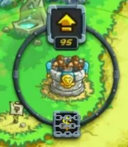
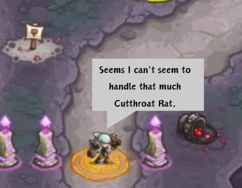
阶段目标：让玩家在压力不大的情况下熟悉英雄技能。
阶段目标：引导玩家理解英雄的强项和弱项。
阶段目标：提供策略引导，包括特定的策略组合，或熟悉防御塔的用法。
阶段目标：混合之前出现过的敌人，帮助玩家综合运用目前学到的所有技巧。
根据剩余生命值判定胜负，星级数量也根据剩余生命值决定。
如果关卡中安排了剧情发展或结局，关卡结束时会播放一段漫画。
玩家通关英雄的支线关卡后，会获得等级解锁奖励。
原作中，英雄可以不受限制地升到 10 级。修改后的系统中，9 级和 10 级被锁定，英雄在获得等级解锁奖励之前只能升到 8 级。即使英雄在 8 级时经验已满，也不能升到 9 级。不过英雄可以继续积累经验，等级解锁后即可升级。
9 级或 10 级被锁定时，处于 8 级或 9 级的英雄的经验条上会显示一个等级限制图标。鼠标悬停在图标上会显示说明。
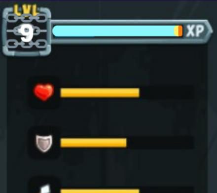
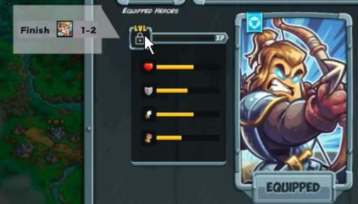
根据英雄拥有的支线关卡数量，等级解锁奖励有所不同：
| 英雄拥有的支线关卡数量 | 等级解锁奖励 |
|---|---|
| 1 | 在支线关卡 2 解锁 9 级 在支线关卡 3 解锁 10 级 |
| 2 | 在支线关卡 1 解锁 9 级 在支线关卡 2 解锁 10 级 |
| 3 | 在支线关卡 1 同时解锁 9 级和 10 级 |
原系统中，角色每升一级获得 4 个技能点。新系统中，从 8 级升到 9 级、从 9 级升到 10 级获得的技能点各减为 2 个。
升到 9 级或 10 级时减少的 2 个技能点，会在对应等级解锁时发放（见 3.3.1 节）。
例子：
每个角色的支线关卡都承担叙事作用。根据英雄拥有的支线关卡数量（见 3.1 节），叙事结构有所不同：
| 英雄拥有的支线关卡数量 | 第一个支线关卡 | 第二个支线关卡 | 第三个支线关卡 |
|---|---|---|---|
| 1 | 铺垫 | 冲突 | 解决 |
| 2 | 铺垫 + 一半冲突 + 解决 | 一半冲突 + 解决 | / |
| 3 | 铺垫 + 冲突 + 解决* | / | / |
*提示：故事片段 1 中为「铺垫 + 一半冲突 + 解决」，故事片段 2 中为「一半冲突 + 解决」。
Excel 原件Branch Levels.xlsx，英文，含以下三张表
下载 Excel| 英雄 | 解锁英雄的主线关卡 | 支线关卡数量 | 支线关卡 1 解锁 | 支线关卡 2 解锁 | 支线关卡 3 解锁 |
|---|---|---|---|---|---|
| Vesper | 主线 1 | 2 | 主线 1 | 主线 3 | / |
| Raelyn | 主线 2 | 3 | 主线 2 | 主线 3 | 主线 4 |
| Nyru | 主线 3 | 2 | 主线 3 | 主线 5 | / |
| Torres | 主线 5 | 2 | 主线 5 | 主线 6 | / |
| Anya | 主线 7 | 3 | 主线 7 | 主线 8 | 主线 9 |
| Grimson | 主线 8 | 3 | 主线 8 | 主线 9 | 主线 10 |
| Broden | 主线 9 | 3 | 主线 9 | 主线 10 | 主线 11 |
| Therien | 主线 11 | 3 | 主线 11 | 主线 12 | 主线 13 |
| Onagro | 主线 13 | 3 | 主线 13 | 主线 14 | / |
| Warhead | 主线 14 | 2 | 主线 14 | 主线 15 | / |
| Lumenir | 主线 16 | 1 | 主线 16 | / | / |
| Kosmyr | 主线 16 | 1 | 主线 16 | / | / |
| 支线关卡编号 | 通关后解锁 | 对应关卡 | 支线关卡主题 | 要求角色 | 要求防御塔 |
|---|---|---|---|---|---|
| 01 | 主线 1 | Vesper 1（表示这是 Vesper 的支线关卡 1） | 基础防御塔协同与升级 | Vesper | |
| 02 | 主线 2 | Raelyn 1 | Tricannon | Raelyn | Archer Tower（锁定） |
| 03 | 主线 3 | Vesper 2 | 近战、远程与防空 | Vesper | |
| 04 | 主线 3 | Raelyn 2、Nyru 1（表示 Raelyn 的支线关卡 2 和 Nyru 的支线关卡 1 是同一关） | 抗性 | Raelyn & Nyru | |
| 05 | 主线 4 | Raelyn 3 | 单体与范围伤害（AoE）& Ballista Outpost | Raelyn | |
| 06 | 主线 5 | Nyru 2 | 切换路线 | Nyru | |
| 07 | 主线 5 | Torres 1 | Arborean Emissary & 防御塔与英雄/防御塔之间的协同 | Torres | |
| 08 | 主线 6 | Torres 2 | Battle Brewmasters & Demon Pit | Torres | |
| 09 | 主线 7 | Anya 1 | 技能点分配 | Anya | |
| 10 | 主线 8 | Anya 2 | Necromancer Tower & Elven Stargazer | Anya | |
| 11 | 主线 8 | Grimson 1 | 新敌人 | Grimson | |
| 12 | 主线 9 | Anya 3 | 技能点分配 2 & 真实伤害 | Anya | |
| 13 | 主线 9 | Broden 1、Grimson 2 | Dwarven Flamespitter | Broden & Grimson | |
| 14 | 主线 10 | Broden 2、Grimson 3 | 特殊英雄 & Dune Sentinels | Broden & Grimson | |
| 15 | 主线 11 | Broden 3、Therien 1 | Rocket Gunners | Broden & Grimson | |
| 16 | 主线 12 | Therien 2 | 特殊敌人 & Rocket Gunners 2 | Therien | |
| 17 | 主线 13 | Therien 3、Onagro 1 | Eldritch Channeler | Therien & Onagro | |
| 18 | 主线 14 | Onagro 2、Warhead 1 | 特殊敌方单位 2 | Onagro & Warhead | |
| 19 | 主线 15 | Warhead 2 | Grim Wraiths & 防御塔与英雄/防御塔之间的协同 2 | Warhead | |
| 20 | 主线 16 | Lumenir 1、Kosmyr 1 | 最终挑战 | Lumenir & Kosmyr |
| 波次 | 持续时间 | 出怪时间 | 敌人 | 数量 |
|---|---|---|---|---|
| 1 | 5s | Hog Invader | 3 | |
| 25s | 10s | Tusked Brawler | 2 | |
| 2 | 0s | Tusked Brawler | 2 | |
| 25s | 5s | Hog Invader | 4 | |
| 3 | 0s | Bear Vanguard | 1 | |
| 25s | 5s | Hog Invader | 4 | |
| 4 | 0s | Tusked Brawler | 2 | |
| 25s | 5s | Cutthroat Rat | 3 | |
| 5 | 5s | Hog Invader | 4 | |
| 25s | 10s | Hog Invader | 4 | |
| 6 | 0s | Bear Vanguard | 1 | |
| 5s | Tusked Brawler | 4 | ||
| 10s | Cutthroat Rat | 3 | ||
| 25s | 15s | Hog Invader | 4 | |
| 7 | 5s | Cutthroat Rat | 3 | |
| 10s | Hog Invader | 4 | ||
| 13s | Bear Vanguard | 3 | ||
| 19s | Tusked Brawler | 2 | ||
| N/A | 25s | Hog Invader | 4 |